×
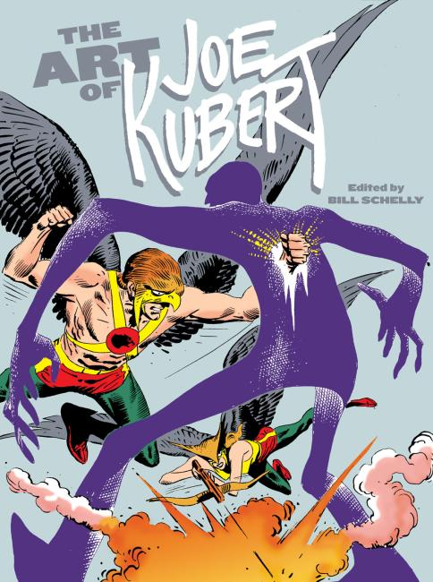
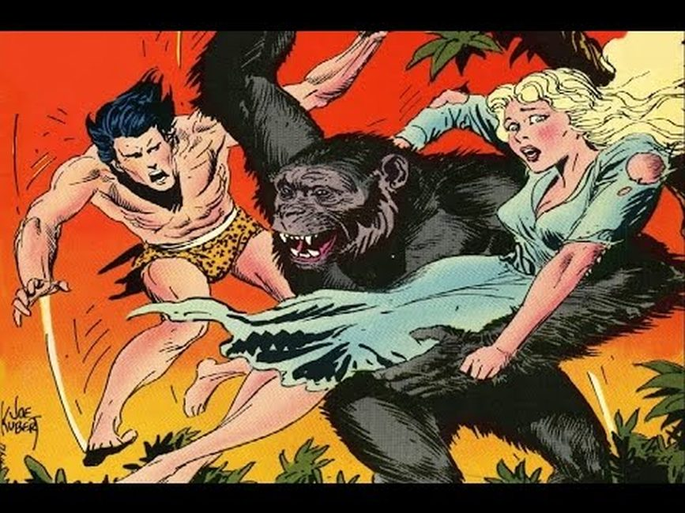
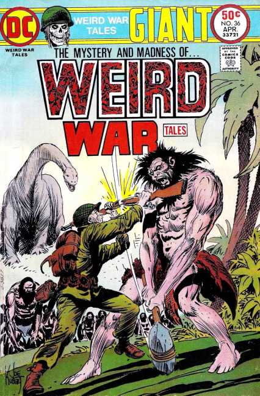
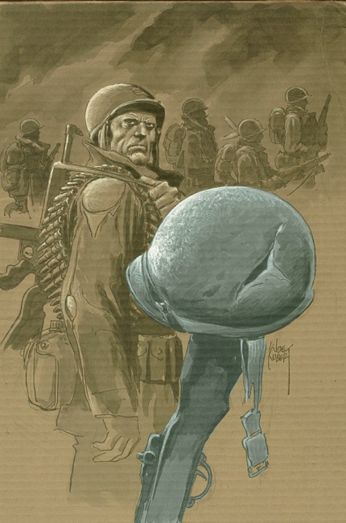
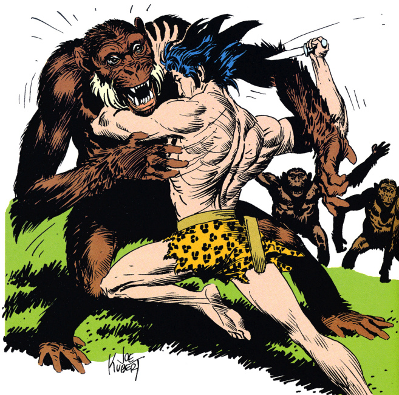
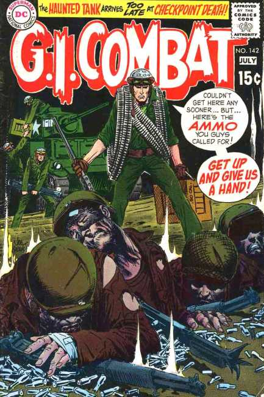
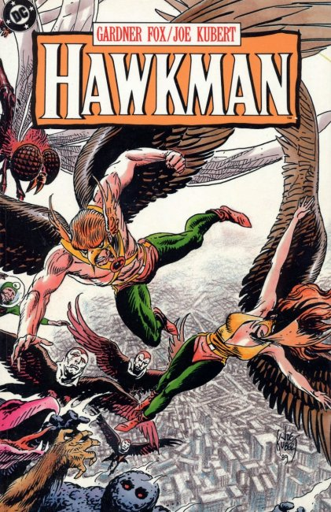
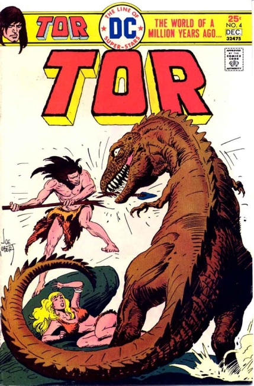
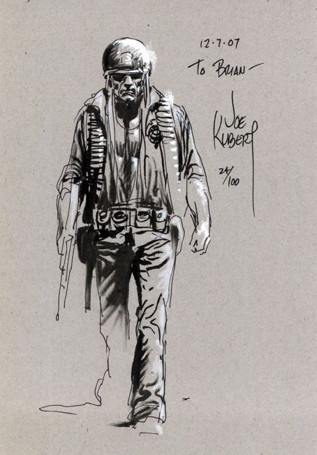
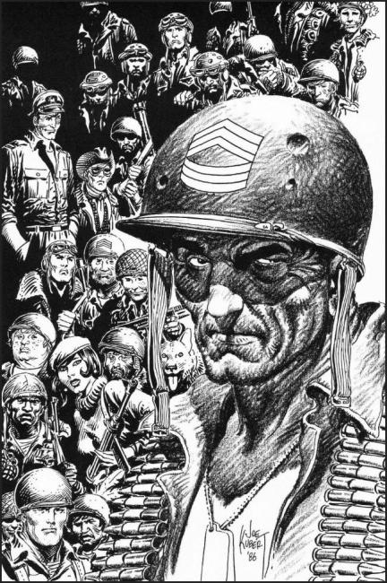
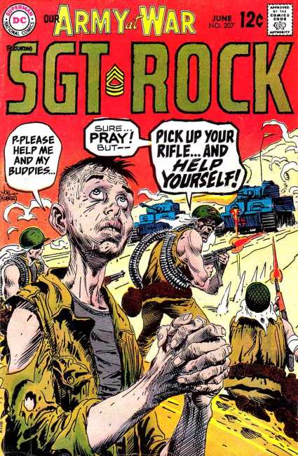
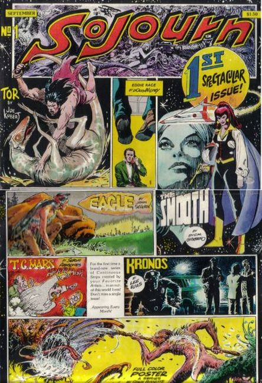
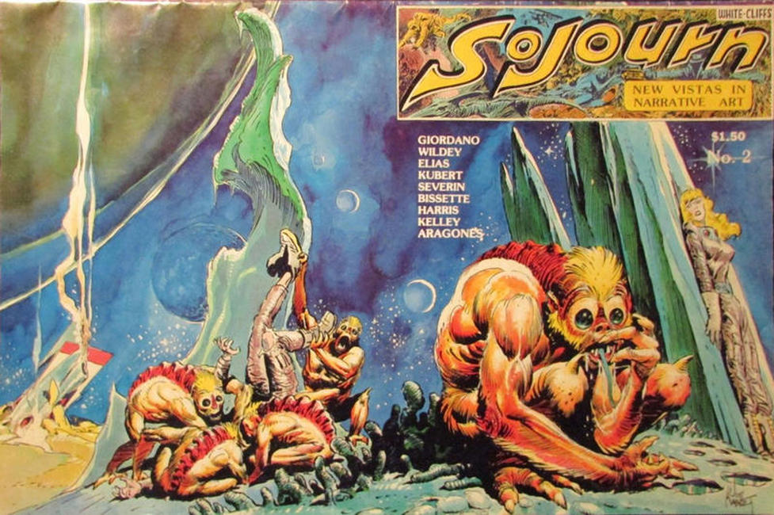
❮
❯
Joseph Kubert (September 18, 1926 – August 12, 2012) was a Polish-born American comic book artist, art teacher, and founder of The Kubert School. He is best known for his work on the DC Comics characters Sgt. Rock and Hawkman. He is also known for working on his own creations, such as Tor, Son of Sinbad, and the Viking Prince, and, with writer Robin Moore, the comic strip Tales of the Green Beret. Two of Kubert's sons, Andy Kubert and Adam Kubert, themselves became recognized comic book artists, as did many of Kubert's former students, including Stephen R. Bissette, Amanda Conner, Rick Veitch, Eric Shanower, Steve Lieber, and Scott Kolins.
Kubert's first known professional job was penciling and inking the six-page story "Black-Out", starring the character Volton, in Holyoke Publishing's Catman Comics #8 (March 1942; also listed as vol. 2, #13). He would continuing drawing the feature for the next three issues, and was soon doing similar work for Fox Comics' Blue Beetle.[9] Branching into additional art skills, he began coloring the Quality Comics reprints of future industry legend Will Eisner's The Spirit, a seven-page comics feature that originally ran as part of a newspaper Sunday supplement.
Kubert served as DC Comics' director of publications from 1967 to 1976.
The Joe Kubert School of Cartoon and Graphic Art was founded in September 1976 by Kubert and his wife Muriel in Dover, New Jersey's former high school, whose tall windows offered optimal lighting. Its first graduating class of 1978 included Stephen R. Bissette, Thomas Yeates, and Rick Veitch. Kubert taught a number of students who later became notable professionals, including Amanda Conner, Eric Shanower, Steve Lieber, and Scott Kolins.
Kubert was inducted into the Harvey Awards' Jack Kirby Hall of Fame in 1997, and the Will Eisner Comic Book Hall of Fame in 1998.
Titles
DC Comics
9-11: The World's Finest Comic Book Writers & Artists Tell Stories to Remember (2002)
Action Comics (1943)
Action Comics Annual #10 (2007)
All-American Comics #70 (1946)
All-American Men of War (1955)
All-American Western #103-116, 121, 125 (1948)
All Star Comics #21, 24-30, 33-37, 56-57 (1944)
Atom and Hawkman #40-41 (1968–1969)
Batman #400 (1986)
Batman Black and White #1 (1996)
Before Watchmen: Nite Owl #1-3 (2012)
Big All-American Comic Book #1 (1944)
The Brave and the Bold #1-24 (1955)
Captain Storm (1964)
Storm (1964)
DC Comics Presents (1984)
DC Special #5 (1969)
DC Universe: Last Will and Testament (2008)
DC Universe: Legacies (2010)
Detective Comics (1981)
Dong Xoai, Vietnam 1965 (2010)
Flash Comics (1945)
From Beyond the Unknown (cover)(1971)
Frontier Fighters #1-8 (1955)
Ghosts vol. 2 #1 (2012)
G.I. Combat (1957)
Heroes Against Hunger #1 (among other artists) (1986)
House of Mystery #96 (1960)
House of Secrets #29-30, 39 (1960)
Jew Gangster SC (2011)
Jimmy Wakely (1950)
Joe Kubert Presents (2012)
Just Imagine Stan Lee with Joe Kubert Creating Batman (2001)
Justice League of America (1982)
Korak, Son of Tarzan (1972)
Leading Comics (1943)
More Fun Comics (1944)
Mystery in Space (1956)
Our Army at War (1955)
Our Fighting Forces (1955)
Ragman (1977)
Sea Devils (1963)
Sensation Comics (1944)
Sgt. Rock (1977)
Sgt. Rock Special (1992)
Sgt. Rock: Between Hell and a Hard Place (2003)
Sgt. Rock: The Prophecy (2006)
Showcase (1956)
Star-Spangled Comics (1945)
Star Spangled War Stories (1955)
Strange Adventures #55 (1955)
Tarzan (1972)
Tomahawk (1969)
Tor vol. 2 (1975)
Tor vol. 4 (2008)
Wednesday Comics (2009)
Weird War Tales (1971)
World's Finest Comics (1949)
Yossel SC (2011)
Young All-Stars Annual #1 (1988)
Marvel Comics
Abraham Stone #1-2 (1995)
Apache Kid #13 (1955)
Battle #37, 41 (1955)
Best Love #33 (1949)
Ghost Rider #28-31 (inker) (1992)
Ghost Rider/Blaze: Spirits of Vengeance (1992)
Girl Comics #2 (inker) (1950)
Joe Kubert's Tor #1-4 (1993)
Journey into Mystery #21 (1955)
Journey into Unknown Worlds #34 (1955)
Kid Colt Outlaw #48 (1955)
Loveland #2 (inker) (1950)
Lovers #25, 30 (1949–1950)
Marines in Battle #7-8 (1955)
Marvel Tales #122, 134 (1954–1955)
My Love #3 (inker) (1950)
Our Love #2 (inker) (1950)
The Punisher War Journal #31 (inker) (1991)
The Punisher War Zone #31-36 (1994-1995)
Uncanny Tales #28 (1955)
War Comics #38 (1955)
Western Outlaws #9 (1955)
Collected editions
Tarzan: The Joe Kubert Years (Dark Horse Comics)
Volume 1 collects Tarzan (2005)
Volume 2 collects Tarzan (2006)
Volume 3 collects Tarzan (2006)
Enemy Ace Archives (DC Comics)
Volume 1 Enemy Ace stories from Our Army at War, Showcase, Star Spangled War Stories (2002)
Volume 2 Enemy Ace stories from Star-Spangled War Stories (2006)
Hawkman Archives (DC Comics)
Volume 1 includes The Brave and the Bold (2000)
Sgt. Rock Archives (DC Comics)
Volume 1 collects Sgt. Rock stories from G.I. Combat, Our Army at War, (2002)
Volume 2 collects Sgt. Rock stories from Our Army at War (2003)
Volume 3 collects Sgt. Rock stories from Our Army at War (2005)
Volume 4 collects Sgt. Rock stories from Our Army at War (2012)
Tor (DC Comics)
Volume 1 (2001)
Volume 2 (2002)
Volume 3 (2004)
Wednesday Comics (2010)
Joe Kubert's Tarzan of the Apes: Artist's Edition (2012)
Sojourn (1977)